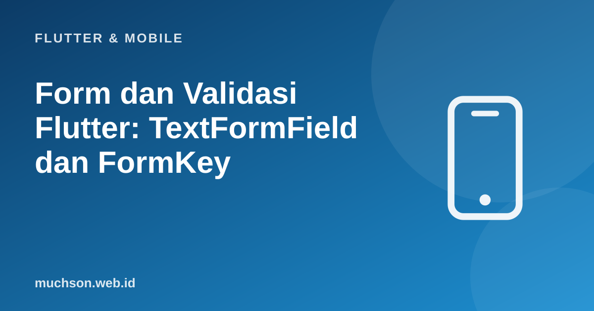

Beranda › Artikel › Flutter & Mobile
Flutter & MobileForm dan Validasi Flutter: TextFormField dan FormKey
Form adalah titik kontak utama dengan pengguna: pendaftaran, pencarian, pemesanan. Kualitasnya terlihat pada hal kecil: keyboard yang sesuai jenis isian, pesan galat yang membantu, fokus yang berpindah dengan wajar, dan tombol yang tidak menjebak. Flutter menyediakan Form dan TextFormField yang membuat semua itu terkelola.
Sebaiknya sudah paham: StatefulWidget, dasar Dart

Setelah membaca dan mencoba materi ini, Anda mampu:
- membangun form dengan Form, GlobalKey
, dan TextFormField - menulis validator sebagai fungsi murni yang mudah diuji
- mengatur jenis keyboard, aksi tombol, fokus, dan obscureText
- mengelola controller dan melepasnya di dispose
- menangani submit, status mengirim, dan galat dari server
Contoh Flutter ditampilkan sebagai kode yang mengikuti dokumentasi Flutter 3.x (Material 3, Dart 3). Bagian logika Dart murni dijalankan sungguhan dengan Dart SDK agar keluarannya dapat dibuktikan; kode yang butuh Flutter (widget) tidak dijalankan di halaman ini.
Form dasar
class FormDaftar extends StatefulWidget {
const FormDaftar({super.key});
@override
State<FormDaftar> createState() => _FormDaftarState();
}
class _FormDaftarState extends State<FormDaftar> {
final _kunci = GlobalKey<FormState>(); // pegangan untuk memvalidasi seluruh form
final _nama = TextEditingController();
final _surel = TextEditingController();
final _sandi = TextEditingController();
bool _kirim = false;
@override
void dispose() {
_nama.dispose(); _surel.dispose(); _sandi.dispose(); // jangan lupa melepas controller
super.dispose();
}
Future<void> _submit() async {
if (!_kunci.currentState!.validate()) return; // jalankan semua validator; berhenti bila ada galat
setState(() => _kirim = true);
try {
await api.daftar(_nama.text.trim(), _surel.text.trim(), _sandi.text);
if (!mounted) return;
ScaffoldMessenger.of(context).showSnackBar(const SnackBar(content: Text('Pendaftaran berhasil')));
} finally {
if (mounted) setState(() => _kirim = false);
}
}
@override
Widget build(BuildContext context) {
return Form(
key: _kunci,
autovalidateMode: AutovalidateMode.onUserInteraction, // validasi setelah pengguna menyentuh kolom
child: Column(children: [
TextFormField(
controller: _nama,
decoration: const InputDecoration(labelText: 'Nama lengkap'),
textInputAction: TextInputAction.next, // tombol keyboard "Lanjut" memindahkan fokus
textCapitalization: TextCapitalization.words,
validator: Validator.nama,
),
TextFormField(
controller: _surel,
decoration: const InputDecoration(labelText: 'Surel'),
keyboardType: TextInputType.emailAddress, // keyboard dengan tombol @
textInputAction: TextInputAction.next,
autofillHints: const [AutofillHints.email],
validator: Validator.surel,
),
TextFormField(
controller: _sandi,
decoration: const InputDecoration(labelText: 'Kata sandi'),
obscureText: true,
textInputAction: TextInputAction.done,
onFieldSubmitted: (_) => _submit(),
validator: Validator.sandi,
),
const SizedBox(height: 16),
FilledButton(onPressed: _kirim ? null : _submit, child: Text(_kirim ? 'Mengirim...' : 'Daftar')),
]),
);
}
}Validator sebagai fungsi murni
Validator Flutter adalah fungsi String? Function(String?): mengembalikan pesan galat atau null bila valid. Karena murni, ia dapat diuji tanpa Flutter sama sekali.
class Validator {
static String? nama(String? v) {
final t = v?.trim() ?? '';
if (t.isEmpty) return 'Nama wajib diisi.';
if (t.length < 3) return 'Nama minimal 3 karakter.';
return null;
}
static String? surel(String? v) {
final t = v?.trim() ?? '';
if (t.isEmpty) return 'Surel wajib diisi.';
if (!RegExp(r'^[^\s@]+@[^\s@]+\.[^\s@]{2,}$').hasMatch(t)) return 'Format surel belum benar.';
return null;
}
static String? sandi(String? v) {
if (v == null || v.isEmpty) return 'Kata sandi wajib diisi.';
if (v.length < 8) return 'Minimal 8 karakter.';
if (!v.contains(RegExp(r'[0-9]'))) return 'Sertakan setidaknya satu angka.';
return null;
}
static String? ponsel(String? v) {
final digit = (v ?? '').replaceAll(RegExp(r'[^\d+]'), '');
final norm = digit.startsWith('+62') ? '0' + digit.substring(3) : digit.startsWith('62') ? '0' + digit.substring(2) : digit;
return RegExp(r'^08\d{8,11}$').hasMatch(norm) ? null : 'Nomor ponsel tidak valid.';
}
}
void main() {
int lulus = 0, gagal = 0;
void uji(String nama, String? aktual, String? harapan) {
final ok = aktual == harapan;
ok ? lulus++ : gagal++;
print('${ok ? "LULUS" : "GAGAL"} $nama -> $aktual');
}
uji('nama kosong', Validator.nama(''), 'Nama wajib diisi.');
uji('nama pendek', Validator.nama('Al'), 'Nama minimal 3 karakter.');
uji('nama valid', Validator.nama(' Ani '), null);
uji('surel salah', Validator.surel('ani@x'), 'Format surel belum benar.');
uji('surel valid', Validator.surel('ani@contoh.id'), null);
uji('sandi tanpa angka', Validator.sandi('abcdefgh'), 'Sertakan setidaknya satu angka.');
uji('sandi valid', Validator.sandi('rahasia123'), null);
uji('ponsel +62', Validator.ponsel('+62 812-3456-7890'), null);
uji('ponsel salah', Validator.ponsel('12345'), 'Nomor ponsel tidak valid.');
print('$lulus lulus, $gagal gagal');
}LULUS nama kosong -> Nama wajib diisi.
LULUS nama pendek -> Nama minimal 3 karakter.
LULUS nama valid -> null
LULUS surel salah -> Format surel belum benar.
LULUS surel valid -> null
LULUS sandi tanpa angka -> Sertakan setidaknya satu angka.
LULUS sandi valid -> null
LULUS ponsel +62 -> null
LULUS ponsel salah -> Nomor ponsel tidak valid.
9 lulus, 0 gagal
Keyboard dan pengalaman input
| Properti | Fungsi | Contoh |
|---|---|---|
| keyboardType | Jenis keyboard | emailAddress, phone, number, url, multiline |
| textInputAction | Tombol aksi keyboard | next (lanjut), done (selesai), search, send |
| textCapitalization | Huruf kapital otomatis | words (nama), sentences, characters |
| inputFormatters | Menyaring atau memformat ketikan | FilteringTextInputFormatter.digitsOnly, batas panjang |
| autofillHints | Mengisi otomatis dari pengelola kata sandi/kontak | email, password, name, telephoneNumber |
| obscureText + ikon mata | Sembunyikan/tampilkan kata sandi | Toggle di suffixIcon |
| autovalidateMode | Kapan memvalidasi | onUserInteraction (disarankan), disabled, always |
// membatasi ketikan hanya angka dan panjang 13
TextFormField(
keyboardType: TextInputType.number,
inputFormatters: [FilteringTextInputFormatter.digitsOnly, LengthLimitingTextInputFormatter(13)],
decoration: const InputDecoration(labelText: 'Nomor ponsel', prefixText: '+62 '),
)
// pindah fokus manual
final _fokusSurel = FocusNode();
TextFormField(textInputAction: TextInputAction.next, onFieldSubmitted: (_) => _fokusSurel.requestFocus());
TextFormField(focusNode: _fokusSurel /* dispose di dispose() */);
// menutup keyboard saat mengetuk di luar
GestureDetector(onTap: () => FocusScope.of(context).unfocus(), child: formulir)Galat dari server
Validasi di aplikasi hanya kenyamanan. Server tetap memvalidasi dan dapat menolak (misalnya "surel sudah terdaftar"). Tampilkan galat server pada kolom yang tepat (dari respons 422) alih-alih satu pesan umum. Simpan galat server di state dan kembalikan dari validator: validator: (v) => _galatServer["surel"].
1. Tulis validator untuk "umur" yang menerima bilangan bulat 17 sampai 100.
2. Mengapa nonaktifkan tombol saat mengirim?
3. Apa fungsi textInputAction.next?
4. Bagaimana menampilkan galat 422 dari server pada kolom surel?
- Form + GlobalKey
+ TextFormField; validate() menjalankan semua validator. - Validator murni String? Function(String?) mudah diuji tanpa Flutter.
- keyboardType, textInputAction, inputFormatters, autofillHints memperbaiki pengalaman.
- Dispose controller dan FocusNode; cegah kirim ganda; validasi ulang di server.